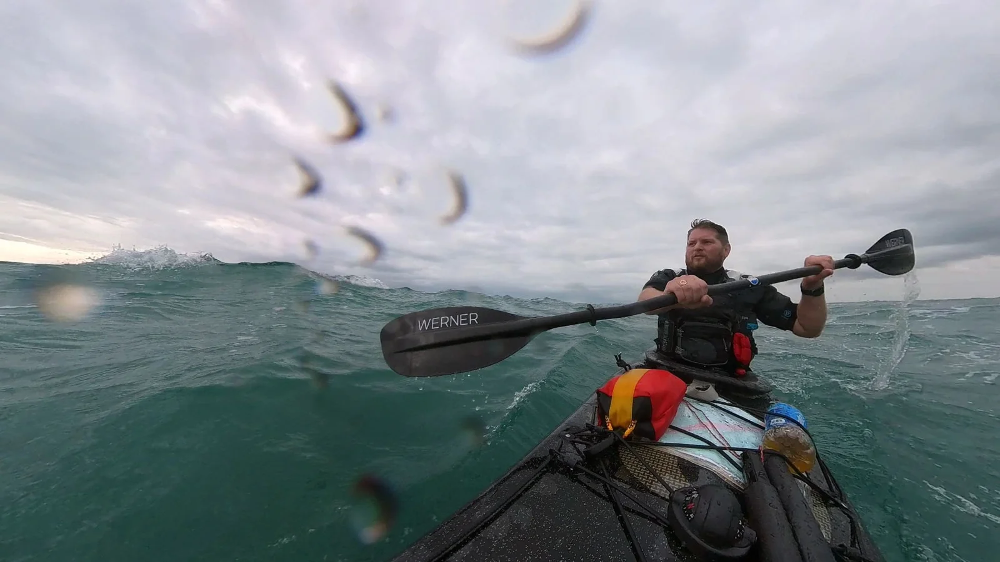
Watch the film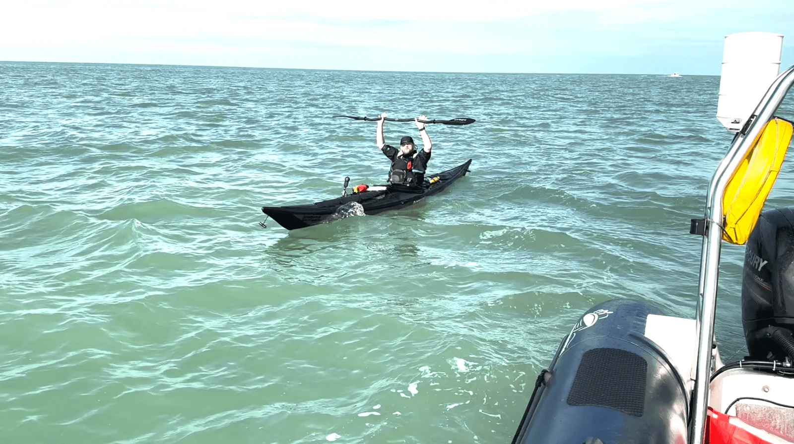
01
ENGLISH CHANNEL · OCTOBER 2022
Solo Crossing English Channel
In October 2022 I undertook a solo crossing of the English Channel.
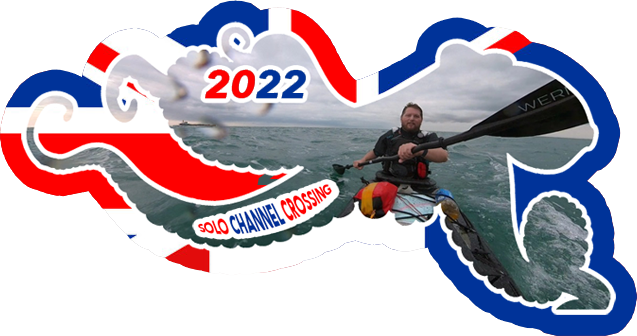
ADVENTURE STARTS WITH CONFIDENCE
Kayak coaching. Wilderness skills. Real adventure.
Learn from experience, wherever the journey takes you.
HELLO, I’M GARY FLETCHER
I teach expedition, wilderness, and remote touring training. As a result, I teach both here in the UK and across the globe, pairing in-the-field experience with classroom learning.
Practical experience in extreme environments is the cornerstone of my teaching. I only work with volunteer organisations or clubs, and all my work is non-commercial.
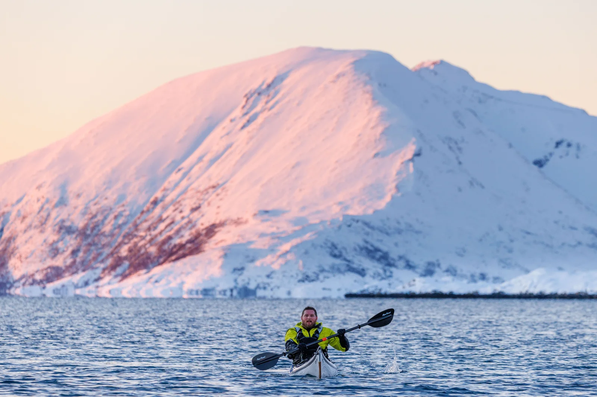
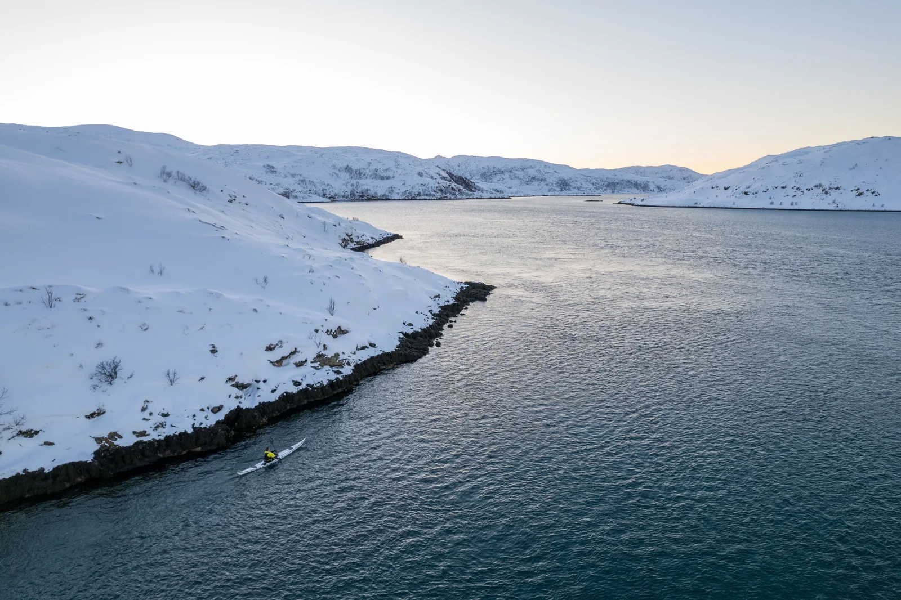
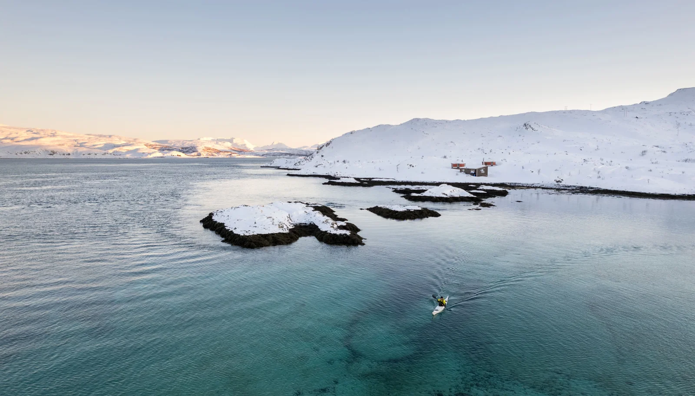
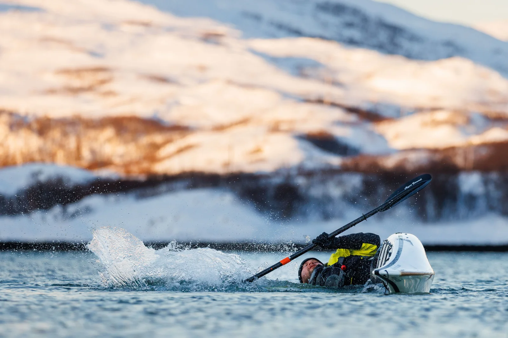
FIELD NOTES / EXPEDITIONS

Watch the film
ENGLISH CHANNEL · OCTOBER 2022
In October 2022 I undertook a solo crossing of the English Channel.

NORWAY · MARCH 2023
In March 2023, having been unable to undertake an exped to Antarctica for technical reasons and desperate to experience these extreme conditions as a follow on from my solo English Channel crossing, I decided to visit the opposite Pole and led a short expedition to "way north" of the Arctic Circle with Mike Middleton, leveraging support from Lise Haug as an expert local guide.
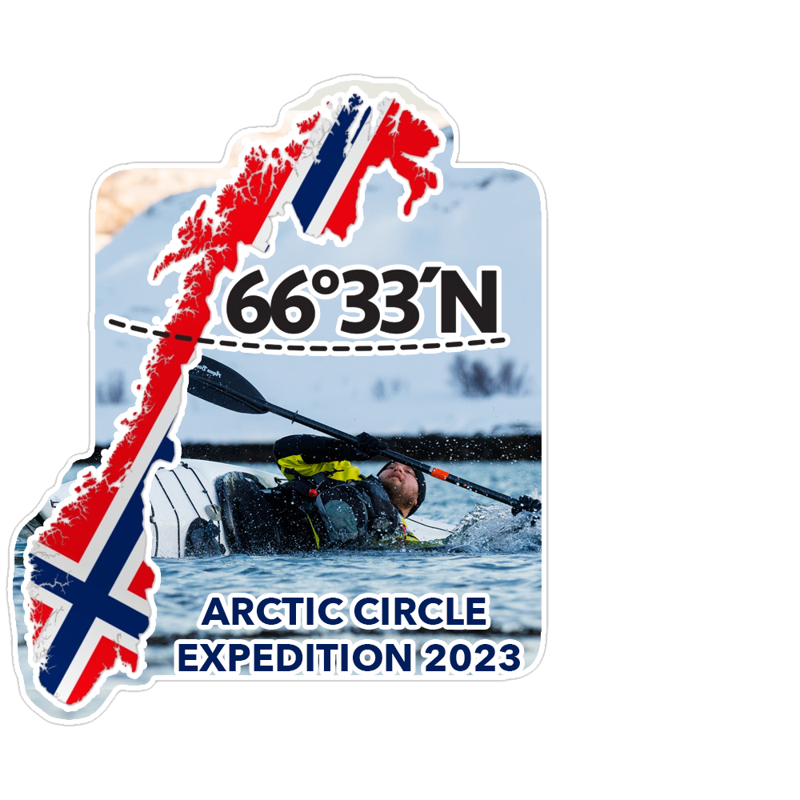
BAHAMAS · MAY 2023
Continuing the expedition and challenging Paddlesports theme, I, in a completely fully loaded single kayak, was joined by a team of four double kayakers during an epic expedition along the Great Bahamas Bank. The team had the extraordinary opportunity to camp on enchanting desert islands and encountered amazing wildlife, including iguanas, sharks, and stingrays.
After navigating over 100 kilometres, an injury prevented me from participating for a day and a half. During this time, I utilised my expertise in sailing and powerboating to scout potential camp sites, demonstrating my dedication to the team's success.
I rejoined the group at a magical moment, as the team appreciated the beauty of the mangrove lagoon.
ROOTED IN THE PADDLING COMMUNITY
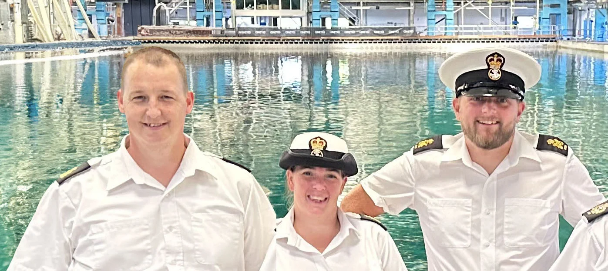
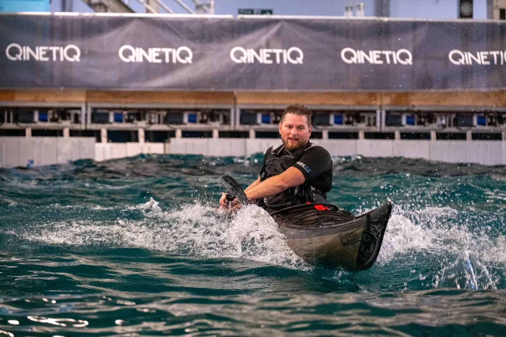
As a former National Staff Officer for Paddlesports within the Sea and Marine Cadets, I oversaw perhaps the biggest canoe and kayak club in the country! My leadership integrated paddlesport into the core syllabus, promoting safe, enriching experiences and adventure. I also ensured rigorous health and safety standards through detailed risk assessments and paddle plans.
As a coach at Battersea Canoe Club, Windsor and Eton Canoe Club, and Poole Harbour Canoe Club, I refined my skills and stayed connected with the paddling community. My expertise earned me a role with the PaddleUK Awarding Body's Technical Touring Group, contributing to the advancement of paddlesport standards.
I am proud of my contributions to paddlesports, inspiring a legacy of safety, education, and adventure.
Gary Fletcher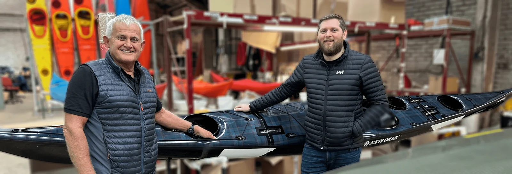
THE KIT BEHIND THE JOURNEY
I am very excited to receive my one of a kind custom Explorer Kayak made by Nigel Dennis incorporating my very own Lead Coaches "Fletcher Tartan". The boat is purpose built for future expeditions and you won't miss me on the water!
SKILLS FOR THE JOURNEY
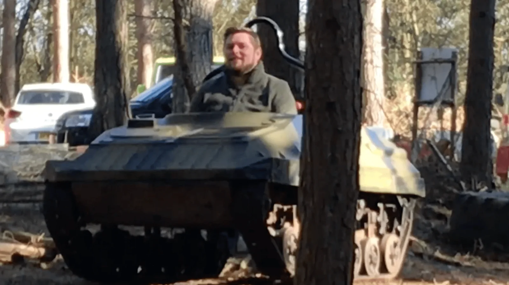
I have instructor qualifications in Archery, First Aid, Touring and Camping as well as Horse Riding. I can also supervise and assess the Duke of Edinburgh Award Expeditions in multiple disciplines.
Explore land courses ↘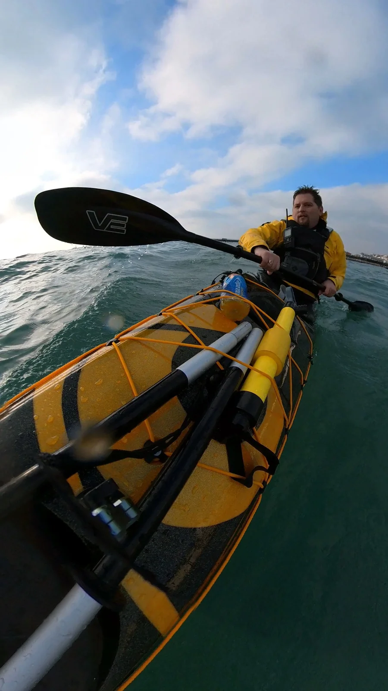
I am able to instruct in a variety of conditions in the sea from Paddlesports to Power and Safety Boating
Explore sea courses ↘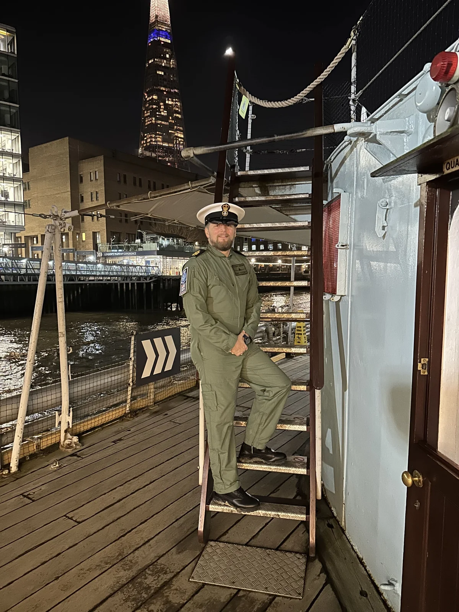
I am able to deliver tailored aviation introductions in a variety of topics.
Explore air courses ↘ON THE LAND
I can run a wide range of land and shore based courses
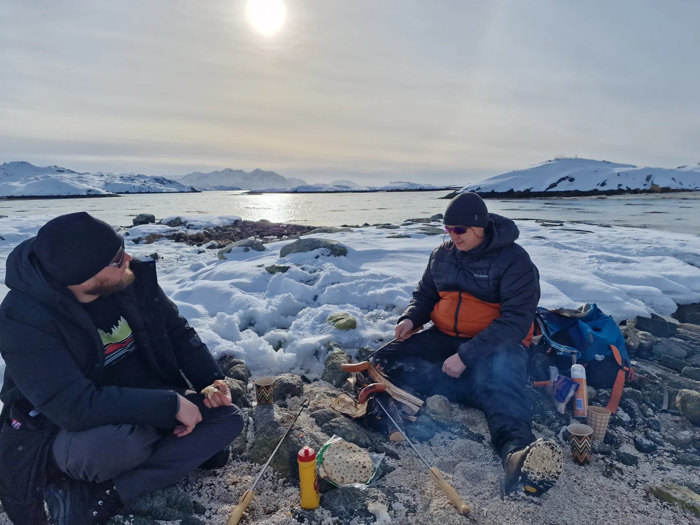
TASTER SESSIONS
The best way to try out the sport of archery is to take taster sessions.
No previous experience is required and I am able to introduce groups to the Recurve Bow via the Archery GB syllabus which includes the basics of shooting the bow and arrow safely.
There is a minimum age limit of 8 years old, but no upper age limit assuming you are still fit enough to pull the bow string safely.
ONE DAY COURSE
The course covers all the usual first aid subjects, but from a boating perspective.
It is aimed at anyone who goes afloat, whether on inland waters, rivers, estuaries or on cross channel passages.
This course is MCA approved and satisfies the requirements for Coastal Skipper Yachtmaster and Advanced Powerboat certificates of competence and some commercial work afloat.
EQUINE TOURISM
I hold the equine tourism award and am able to lead rides out at various establishments and giving you the opportunity to enjoy the countryside on horseback.
GOLD, SILVER AND BRONZE PADDLING EXPEDITIONS
I am a huge advocate of paddlesport expeditions in Canoe, Kayak and even SUP (Stand Up Paddleboard). I want to help as many people as possible access these new sports and learn these amazing skills for their expeditions! I can also supervise and assess Duke of Edinburgh awards.
ON THE WATER
I can offer dynamic and exciting courses and expeditions for adults at beginner skill-levels.
I can run introductory 'Paddle Start' sessions, PaddleUK paddle awards are an excellent way to get in to canoeing. Your group doesn't need any previous experience, specialist kit or skills! If you haven't been paddling before, the introductory 'Paddle Start' sessions are also a great opportunity to find out what the sport has to offer. Perhaps, it's been a while since you were last out on the water, or maybe you want to share your passion and introduce others the sport. If you are looking to further your canoeing development, I also offer PaddleUK's new Paddle Awards.
Feel like an adventure? How about paddling through the Fjords of Norway with my friends?
Fancy learning some new skills? Maybe you want to learn to roll or improve your technique, or perhaps explore something new... Greenland rolling? Where better than perhaps the warmer waters of the Mediterranean? I can arrange the perfect trip for your group through my friends.
Want to try something new? A White Water course on the River Dee in North Wales? Surf Kayaking anyone? I can arrange the perfect intro for you through my friends, whatever the discipline.
BOAT HANDLING & SEAMANSHIP
Including direct assessment and ICC / International Certificate of Competence.
Get hands on with boat handling and seamanship in powerboats.
Provides a practical introduction to boat handling and safety in powerboats. It covers boating techniques for launching and recovering a boat from a road trailer, everyday boat handling and the use of safety equipment. The course may be conducted in a variety of boat types, both planing and displacement, and the certificate issued will be endorsed to show the type of boat in which the training took place. A one day introduction to Powerboating with no previous experience required.
Provides the skills and background knowledge needed by the competent powerboat driver and is the basis of the International Certificate of Competence. It aims to teach boat handling and seamanship in powerboats. It focuses on low speed close quarters handling, man overboard recovery, an introduction to driving at planing speed, and collision regulations. The course can be taken at an inland or coastal location. It may be conducted in a variety of boat types, both planing and displacement. The certificate issued will be endorsed to show the type of boat in which the training took place.
This two-day course provides the skills required when acting as an escort craft, safety boat or coach boat for a fleet of dinghies, windsurfers or canoes, or for racing or training activities. It includes rescue techniques and elements of race management and mark laying. It is strongly recommended that a member of the rescue crew should hold a first aid certificate (or should have experience of first aid).
IN THE AIR
Aviation course or trial flight? Contact me for more information on what I support here.
Having taught the Air Cadet syllabus for many years and recently passed out of the Sea Cadet Corps Aviation Instructor Proficiency Course I am able to teach introductory sessions into aviation for various youth groups. I am also a member of the RAF Flying Association.
I am also a very active member of the British Gliding Association who I can arrange introduction and trial flights with.
noun
1. a journey undertaken by a group of people with a particular purpose, especially that of exploration, research, or war.
"an expedition with me via the land, sea and air to discover new horizons"
FOLLOW THE JOURNEY
Loading Instagram feed…
YOUR NEXT CHAPTER
Tell me about your club, your group and what you’d like to explore. All coaching is non-commercial and for volunteer organisations or clubs.
Chat on WhatsAppI aim to reply within 24 hours on business days.
Usually available Monday–Friday, 9am–5pm.